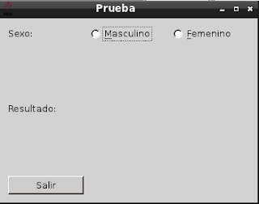
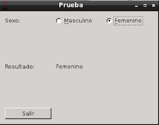

Tutorial de PyQt. RadioButton. Parte 7.
Posted on mié 13 julio 2011 in Tutorial de Python y PyQt • 2 min read
Este post explicará como usar los botones de radio en PyQt.
La idea es que el usuario seleccione uno de las opciones presentadas en este caso se le pregunta el sexo; al darle clip con el ratón o presionar alt+f para femenino o alt+m para masculino el resultado se muestre en una etiqueta automáticamente. Se tiene un botón para salir del programa.
El widget nuevo en la continuación de estos tutoriales de PyQt es:
- QRadioButton : Crea la instancia de un widget RadioButton.
Como esté widget hereda del widget Button se puede usar la señal clicked para capturar el momento de seleccionar una de las opciones.
El código que muestra el programa se muestra a continuación:
#!/usr/bin/env python
# -*- coding: utf-8 -*-
#Se importa el modulo sys
import sys
#De PyQt4 importar QtGui y QtCore.
from PyQt4 import QtGui
from PyQt4 import QtCore
class App(QtGui.QWidget):
def __init__(self,parent=None):
QtGui.QWidget.__init__(self, parent)
#Se define el tamano de la ventana
self.setGeometry(0, 50, 350, 250)
#Se le coloca un titulo a la ventana y se asocia un icono.
self.setWindowTitle('Prueba')
self.setWindowIcon(QtGui.QIcon('./openlogo-50.png'))
#Se define la etiqueta donde se pregunta por el sexo.
etiqueta = QtGui.QLabel("Sexo:")
#Se define la etiqueta que muestra la palabra resultado.
resultado = QtGui.QLabel("Resultado:")
#Se define la etiqueta donde se mostrara la informacion
#seleccionada del boton de radio
self.texto = QtGui.QLabel("")
#Se crea los botones de radio para seleccionar masculino o femenino.
#Se define ahi el uso del alt+m y alt+f para seleccionar
#un boton.
self.botonradio1 = QtGui.QRadioButton("&Masculino",self)
self.botonradio2 = QtGui.QRadioButton("&Femenino",self)
#Se crea el boton para salir del programa
quit = QtGui.QPushButton('Salir', self)
#Empaquetamiento de los widgets en una cuadricula.
grid = QtGui.QGridLayout()
grid.setSpacing(10)
#Se agrega los widgets de etiquetas,radiobuttons y
#el boton salir
grid.addWidget(etiqueta, 0, 0)
grid.addWidget(self.botonradio1,0,1)
grid.addWidget(self.botonradio2,0,3)
grid.addWidget(resultado,2,0)
grid.addWidget(self.texto,2,1)
grid.addWidget(quit,3,0)
self.setLayout(grid)
#Se conecta la segnal con los 2 botones de radio y el boton para
#salir del programa, se asocian a los metodos respectivos.
self.connect(quit, QtCore.SIGNAL('clicked()'),QtGui.qApp, QtCore.SLOT('quit()'))
self.connect(self.botonradio1,QtCore.SIGNAL('clicked()'),self.Mostrar1)
self.connect(self.botonradio2,QtCore.SIGNAL('clicked()'),self.Mostrar2)
def Mostrar1(self):
#Se muestra el resultado seleccionado
self.texto.setText("Masculino")
def Mostrar2(self):
#Se muestra el resultado seleccionado
self.texto.setText("Femenino")
#Se ejecuta el programa principal
if __name__ == "__main__":
#Se instancia la clase QApplication
app = QtGui.QApplication(sys.argv)
#Se instancia el objeto QuitButton
qb = App()
#Se muestra la aplicacion
qb.show()
#Se sale de la aplicacion
sys.exit(app.exec_())
A continuación se muestra la figura del programa iniciando:

La siguiente figura muestra el resultado de darle clip al botón de radio Masculino:

La siguiente figura muestra el resultado de presionar alt+f para seleccionar el botón de radio para Femenino:

Noten que la información a mostrar cambia al seleccionar uno de los botones de radio.
===
¡Haz tu donativo! Si te gustó el artículo puedes realizar un donativo con Bitcoin (BTC) usando la billetera digital de tu preferencia a la siguiente dirección: 17MtNybhdkA9GV3UNS6BTwPcuhjXoPrSzV
O Escaneando el código QR desde billetera: